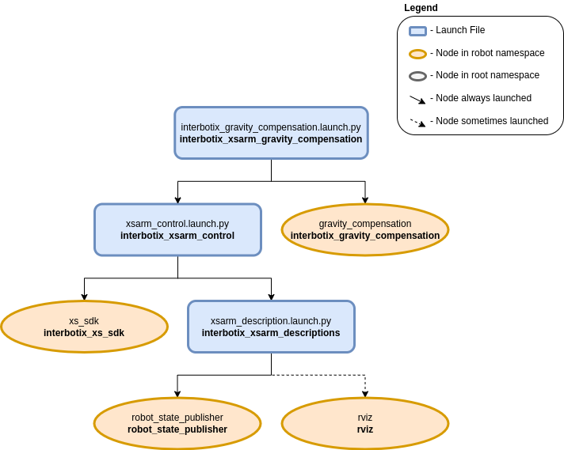

Gravity Compensation
 View Package on GitHub
View Package on GitHub
Overview
As its name suggests, gravity compensation cancels out the effect of the gravity on a system. In our case, we compensate the gravity on an Interbotix arm with its joint motors. This feature is useful when we use the arm as a teleoperation remote or when we teach it a specific trajectory and don’t want to keep holding the arm to avoid it from collapsing.
Note
Currently supported arms include: WidowX-250 6DOF and ALOHA WidowX-250 6DOF.
Configuration
The motor_specs.yaml contains the motor specifications and options for motor assistance and dithering. A template file is given below
# Motor Assist: scale the no-load currents which alleviate the effects of friction
# If the values are invalid, they default to 0
# Joints not specified in the motor_assist or motor_specs sections
# do not support the current control mode
motor_assist:
# Set 'all' to [0, 1] to scale the no load currents of all joints uniformly
# Or to -1 and use joint specific values
all: -1
# Set the joint specific values to [0, 1] to scale differently for each joint
waist: 0.5
shoulder: 0.5
elbow: 0.5
forearm_roll: 0.5
wrist_angle: 0.5
wrist_rotate: 0.5
# Dither: add a oscillatory motion proportional to the load to break static friction
# It is helpful when slow and smooth movements are needed
# WARNING: excessive dithering WILL cause heat and wear on the joints
dither: false
motor_specs:
waist:
# torque constant (Nm/A): how much torque is produced per Amp of current
torque_constant: 1.793
# current unit (A): how much current command is needed to produce 1 Amp of current
current_unit: 0.00269
# no load current (A): the maximum no load current applied when motor_assist == 1
# should be as large as possible without the joint accelerating by itself
no_load_current: 0.0
# kinetic friction (Nm/Nm): the kinetic friction coefficient
# should be tuned so that the friction is uniform over the entire joint range
kinetic_friction_coefficient: 0.0
# static friction coefficient (Nm/Nm): the static friction coefficient
# affects the amplitude of the dithering motion
static_friction_coefficient: 0.0
# dither speed (rad/s): the speed under which the joint dithers
dither_speed: 0.0
shoulder:
torque_constant: 1.793
current_unit: 0.00269
no_load_current: 0.0
kinetic_friction_coefficient: 0.1
static_friction_coefficient: 0.4
dither_speed: 0.5
elbow:
torque_constant: 1.793
current_unit: 0.00269
no_load_current: 0.0
kinetic_friction_coefficient: 0.1
static_friction_coefficient: 0.6
dither_speed: 0.5
forearm_roll:
torque_constant: 0.897
current_unit: 0.00269
no_load_current: 0.2
kinetic_friction_coefficient: 0.0
static_friction_coefficient: 0.0
dither_speed: 0.0
wrist_angle:
torque_constant: 0.897
current_unit: 0.00269
no_load_current: 0.1
kinetic_friction_coefficient: 0.1
static_friction_coefficient: 0.4
dither_speed: 0.5
wrist_rotate:
torque_constant: 0.897
current_unit: 0.00269
no_load_current: 0.2
kinetic_friction_coefficient: 0.0
static_friction_coefficient: 0.0
dither_speed: 0.0
Warning
Excessive dithering WILL cause heat and wear on the joints. Please use it with caution.
Structure
As shown above, the interbotix_xsarm_gravity_compensation package builds on top of the interbotix_xsarm_control package whose details are given here.
This package contains a single node called gravity_compensation.
It subscribes to the /<robot_name>/joint_states topic, computes and publishes the desired current commands to the /<robot_name>/commands/joint_group topic.
Please refer to the GitHub Readme for more details on its derivations and implementation.
Usage
Run the following launch command, assuming the Aloha WidowX-250 arm is being used:
$ ros2 launch interbotix_xsarm_gravity_compensation interbotix_gravity_compensation.launch.py robot_model:=aloha_wx250s
It runs the gravity_compensation node and launches the xsarm_control script to bring up the arm.
Then, enable/disable the gravity compensation with the following service call:
$ ros2 service call /aloha_wx250s/gravity_compensation_enable std_srvs/srv/SetBool 'data: [true/false]'
The arm will hold itself against gravity and can be moved freely when the gravity compensation is enabled. It will lock in its current position when the gravity compensation is disabled.
Warning
The arm WILL torque off and drop for a short period of time while enabling/disabling. Please make sure it is in a resting position or manually held.
Warning
The joints not supporting current control WILL torque off. Please make sure to use an arm with at least the first three joints supporting current control, e.g., RX, WX, VX series.
This is the bare minimum needed to get up and running. Take a look at the table below to see how to further customize with other launch file arguments.
| Argument | Description | Default | Choices |
|---|---|---|---|
| robot_model | model type of the Interbotix Arm. | aloha_wx250s, wx250s |
|
| robot_name | name of the robot (typically equal to robot_model, but could be anything). |
LaunchConfig(robot_model) |
|
| motor_specs | the file path to the ‘motor specs’ YAML file. | LocalVar(‘FindPackageShare(pkg= interbotix_xsarm_gravity_compensation) + ‘config’ + ‘motor_specs_’’) + LaunchConfig(‘robot_model’) + ‘.yaml’ |